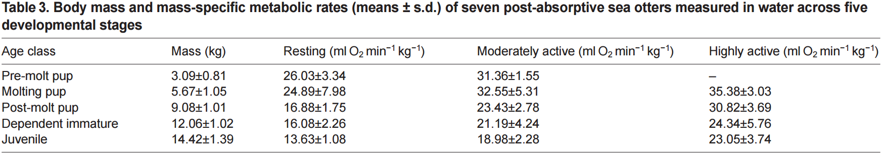
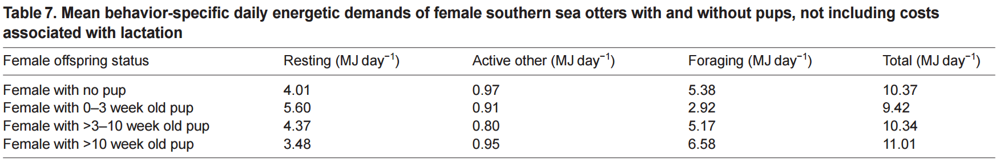

Wolverine feeding on a ungulate carcass, Igor Shpilenok, www.Arkive.org
The basal metabolism of all mustelids weighing greater than 1kg is approximately 20% higher than most other mammals. As a result, Wolverines (and Giant otters) have high energetic needs compared to other mammals [38]. In addition, wolverines thermo-regulate by digging snow dens and cavities which are a behavioural thermoregulation that reduces energetic demands in winter [38]. Furthermore, growing wolverines had a significantly higher metabolic rate than adults due to their rapid growth; their metabolic rate is especially high immediately prior to weaning [4]. This basal metabolic rate of young wolverines during their first few months of life increases in proportion to body weight (W1.41). This rapid increase in total heat production is due to faster growth of high energy producing tissues compared to other mammals [4]. The rapid growth process of kits after weaning has very high energy demands on mothers and can affect female reproduction in the immediate future [4]. Species with higher proportions of meat in the diet also exhibited higher mass-adjusted BMRs [20]. Also, due to the snow habitats in which wolverines live in, the snow impedes their movement even with their specialized paws, increasing the energy requirement in winter seasons
A 10kg female wolverine only requires 71.5% of male’s daily and annual energetic requirements. The average wolverine female requires 3645 kJ of energy/day or 0.61 kg prey/day in winter and 0.68 kg prey/day in snow-free seasons. Females eat 2.1 to 2.4 fewer mule deer per year than males to meet energetic requirements [38]. The prey consumed in winter has higher caloric content which allows for mass requirements to be lower. As a result, wolverines consume 0.1 kg of prey/day more in snow-free seasons than in winters [38]. Since wolverine’s cache food in winter, this provides for a majority of their food source during times when unpredictable or varying food resources arise. The cost of reproduction in the preceding year will affect the current reproduction and food availability in winter also affects reproduction in wolverines [27]. The DEE of the wolverine during pregnancy could not be found due to the scarce research and observations there are on this mysterious animal. The DEE of pregnant mammals will be used instead which should equal have approximately 17-35% more energy requirements than the non-pregnant mammals [13]. This DEE value is calculated using 2.9*BMR =2.9 *117.31 kJ/hr = 340.199 kJ/hr (8164.78 kJ/day). The total DEE by lactating mammals is approximately 5.5*BMR = 5.5*117.31 kJ/hr = 645.21 kJ/hr (15484.92 kJ/day) [13].
Giant otters sleeping, Nick Gordon, www.Arkive.org (note this picture does not represent BMR)
The consumption rate of giant otters is similar to other otters, however, less than some other mustelids and much greater than other carnivorous aquatic mammals. Similar to the findings for wolverines, the metabolic rates of otters and other mustelids are higher than the rates of other terrestrial mammals [7]. Since it is difficult to determine the consumption rates of wild otters due to their rarity, it has been predicted that the consumption rates of wild otters may be higher than captive otters because wild otters must expend more energy to obtain food [7]. The individuals age, size, sex, the season, diet, activity, social group changes and changes in feeding technique must all be taken into account when measuring food intake. Optimal foraging theory predicts that otters should choose prey items based on a resource which provides max energy content per unit of energy expended [7].
Since wolverines are comparable in weight to the sea otter (which is comparable in size and weight to the giant otter), their standard metabolism was 1.3-1.4 met, whereas the sea otter had a standard metabolism of 1.7 met (1met = 3.5 mL/ (kg*min)) [22]. A study found that when sea otters groomed themselves, it involved a range of behaviours which were very energetically costly and resulted in a 64% increase in VO2 and a 55% increase in VCO2 over resting values [19].
The DEE of the giant otter during pregnancy could not be found due to the rarity of finding such species in the wild. The article used to determine the energy requirements and expenditures by giant otters can be adapted by the sea otter (Enhydra lutris) however it must be noted that these values tend to be much greater in giant otters due to the size differences [1]. In this article, it was stated that the daily energy demands of adult females increase 17% three (3) weeks post-partum and continues to increase to 96% above the pre-pregnancy levels once the pup is at an average age of weaning [1].


These tables were taken from Thometz et al. (2014) and from the data, pre-molt pups used the most energy due to their attempts on foraging and swimming which was considered as moderately active behaviours. These young pups spent a majority of their time grooming and resting. The energetic consequences for the adult females were very high when nursing and foraging for pups which were greater than ten (10) weeks old.
Giant otter caring for pup, B. Rohrschneider, www.Arkive.org
Giant otter pup, Fabien Bruggmann and Bruno Fouilla, www.Arkive.org